Using FFAST.jl
A lean wrapper for Chantler's FFAST MAC database
FFAST is the X-ray form factor and mass absorption coefficient (MAC) database developed by Chantler et al and made available through the NIST website. The MACs and form factors were calculated using a self-consistent Dirac-Hartree-Fock framework.
@article{chantler2005attenuation,
title={Attenuation and Scattering Tables},
author={Chantler, CT and Olsen, K and Dragoset, RA and Chang, J and Kishore, AR and Kotochigova, SA and Zucker, DS and Factor, X-Ray Form},
journal={Detailed Tabulation of Atomic Form Factors, Photoelectric Absorption and Scattering Cross Section, and Mass Attenuation Coefficients for Z = 1-92 from E = 1-10 eV to E = 0.4-1.0 MeV},
number={1-92},
pages={1--10},
year={2005}
}Reliable use of this dataset requires a self-consistent set of atomic parameters like edge energy so this library provides methods to access these values.
using FFASTThe range of atomic numbers supported by FFAST.
eachelement(FFASTMAC)Base.OneTo(92)Let's find out which edge energies are available and tabulate them using hasedge(FFASTMAC, z, sh) and edgeenergy(FFASTMAC, z, sh).
The fullest extent of lines available for any element is K, L₁, L₂, ..., P₁₁ or integer indices 1:36
edges = [
[ (ss, edgeenergy(FFASTMAC, z, ss)) for ss in filter(ss->hasedge(FFASTMAC, z, ss),1:36) ] for z in eachelement(FFASTMAC)
]92-element Array{Array{Tuple{Int64,Float64},1},1}:
[(1, 13.6)]
[(1, 24.6)]
[(1, 54.75), (2, 5.34)]
[(1, 111.0), (2, 8.42)]
[(1, 188.0), (2, 13.469999999999999), (3, 4.7)]
[(1, 283.8), (2, 19.509999999999998), (3, 6.4)]
[(1, 401.6), (2, 26.31), (3, 9.2), (4, 9.2)]
[(1, 532.0), (2, 23.7), (3, 7.1000000000000005), (4, 7.1000000000000005)]
[(1, 685.4), (2, 31.0), (3, 8.6), (4, 8.6)]
[(1, 866.9), (2, 45.0), (3, 18.3), (4, 18.3)]
⋮
[(1, 93105.0), (2, 16939.3), (3, 16244.3), (4, 13813.800000000001), (5, 41
49.4), (6, 3854.1), (7, 3301.8999999999996), (8, 2798.0), (9, 2683.0), (10,
995.3) … (15, 175.344), (16, 169.36200000000002), (17, 170.906), (18, 12
5.69500000000001), (19, 98.3141), (20, 31.4), (21, 31.4), (26, 16.7777), (2
7, 7.55974), (28, 5.39477)]
[(1, 95729.9), (2, 17493.0), (3, 16784.7), (4, 14213.5), (5, 4317.0), (6,
4008.0), (7, 3426.0), (8, 2908.7000000000003), (9, 2786.7000000000003), (10
, 1042.0) … (15, 197.076), (16, 190.577), (17, 185.617), (18, 138.4990000
0000002), (19, 108.42599999999999), (20, 41.5942), (21, 37.6618), (26, 19.3
39), (27, 9.03104), (28, 6.2445)]
[(1, 98404.0), (2, 18049.0), (3, 17337.1), (4, 14619.400000000001), (5, 44
82.0), (6, 4159.0), (7, 3538.0), (8, 3021.5), (9, 2892.3999999999996), (10,
1097.0) … (15, 219.631), (16, 212.588), (17, 200.83100000000002), (18, 1
51.771), (19, 118.81700000000001), (20, 48.6911), (21, 44.255), (26, 21.939
7), (27, 10.5726), (28, 7.12588)]
[(1, 101137.0), (2, 18639.0), (3, 17906.5), (4, 15031.2), (5, 4652.0), (6,
4327.0), (7, 3663.0), (8, 3136.2000000000003), (9, 2999.7), (10, 1153.0)
… (15, 246.488), (16, 238.863), (17, 220.035), (18, 169.009), (19, 132.957
), (20, 59.537800000000004), (21, 54.5529), (26, 27.867900000000002), (27,
15.165), (28, 10.6123)]
[(1, 103922.0), (2, 19236.7), (3, 18484.3), (4, 15444.4), (5, 4822.0), (6,
4489.5), (7, 3791.7999999999997), (8, 3248.4), (9, 3104.9), (10, 1208.3999
999999999) … (15, 298.9), (16, 298.9), (17, 254.4), (18, 200.4), (19, 152
.79999999999998), (20, 67.2), (21, 67.2), (26, 43.5), (27, 18.8), (28, 18.8
)]
[(1, 106755.0), (2, 19840.0), (3, 19083.2), (4, 15871.0), (5, 5002.0), (6,
4656.0), (7, 3909.0), (8, 3370.2000000000003), (9, 3219.0), (10, 1269.0)
… (15, 303.944), (16, 295.067), (17, 261.255), (18, 206.171), (19, 163.234
99999999999), (20, 83.1361), (21, 76.9389), (26, 40.4636), (27, 25.1851), (
28, 18.4021)]
[(1, 109651.0), (2, 20472.100000000002), (3, 19693.2), (4, 16300.3), (5, 5
182.299999999999), (6, 4830.4), (7, 4046.1), (8, 3490.8), (9, 3332.0), (10,
1329.5) … (15, 344.4), (16, 335.2), (17, 290.2), (18, 229.4), (19, 181.7
9999999999998), (20, 94.3), (21, 87.9), (26, 59.5), (27, 49.0), (28, 43.0)]
[(1, 112601.0), (2, 21104.600000000002), (3, 20313.7), (4, 16733.1), (5, 5
366.900000000001), (6, 5000.9), (7, 4173.8), (8, 3611.2000000000003), (9, 3
441.8), (10, 1387.1) … (15, 371.2), (16, 359.5), (17, 309.59999999999997)
, (18, 233.624), (19, 183.04999999999998), (20, 96.6789), (21, 89.2408), (2
6, 45.4585), (27, 28.5451), (28, 20.320600000000002)]
[(1, 115606.0), (2, 21757.4), (3, 20947.600000000002), (4, 17166.3), (5, 5
548.0), (6, 5182.2), (7, 4303.4), (8, 3727.6), (9, 3551.7), (10, 1440.80000
00000002) … (15, 391.29999999999995), (16, 380.90000000000003), (17, 323.
7), (18, 259.29999999999995), (19, 195.1), (20, 105.0), (21, 96.3), (26, 70
.7), (27, 42.3), (28, 32.300000000000004)]FFAST is primarily a mass absorption coefficient database. There are three primary methods for various different physical processes. mac(FFASTMAC, PhotoElectricMAC, z, e) computes the photoelectric coefficient, mac(FFASTMAC, CoherentIncoherentMAC, z, e) computes the coherent/incoherent coefficient and mac(FFASTMAC, TotalMAC, z, e) computer the sum of all contributions.
The MAC is a function of the absorber element and the X-ray energy.
mac(FFASTMAC, PhotoElectricMAC, 6, 1000.0), mac(FFASTMAC, CoherentIncoherentMAC, 6, 1000.0), mac(FFASTMAC, TotalMAC, 6, 1000.0)(2072.3033288335278, 1.1413478884182187, 2073.403699724916)mac(FFASTMAC, PhotoElectricMAC, 26, 1000.0), mac(FFASTMAC, CoherentIncoherentMAC, 26, 1000.0), mac(FFASTMAC, TotalMAC, 26, 1000.0)(8830.200630789688, 4.0755333906789755, 8834.301647159959)mac(FFASTMAC, PhotoElectricMAC, 86, 1000.0), mac(FFASTMAC, CoherentIncoherentMAC, 86, 1000.0), mac(FFASTMAC, TotalMAC, 86, 1000.0)(5559.38217735579, 10.131440963320479, 5569.482186492739)There are also methods to calculate the contribution due to photoelectric absorption by the K-shell.
mac(FFASTMAC, KMAC,6, 1.1*edgeenergy(FFASTMAC, 6, 1)), mac(FFASTMAC, KMAC, 26, 1.1*edgeenergy(FFASTMAC, 26, 1)), mac(FFASTMAC, KMAC, 86, 1.1*edgeenergy(FFASTMAC, 86, 1))(38430.14257574841, 282.612972257599, 3.651517263938752)This term is zero below the K edge since photoelectric absorption is energetically forbidden.
mac(FFASTMAC, KMAC,6, 0.9*edgeenergy(FFASTMAC, 6, 1)), mac(FFASTMAC, KMAC, 26, 0.9*edgeenergy(FFASTMAC, 26, 1)), mac(FFASTMAC, KMAC, 86, 0.9*edgeenergy(FFASTMAC, 86, 1))(0.0, 0.0, 0.0)FFAST has optional support (using the Requires module) for the Gadfly plotting library. While FFAST does not require Gadfly and will not load it itself, if Gadfly has been loaded into the Julia session these additional plotting functions are made available.
using Gadfly #
display(plot(FFASTMAC, 6))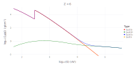
display(plot(FFASTMAC, 26))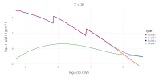
display(plot(FFASTMAC, 86))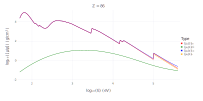
Plot the form factors for C, Iron and Radon.
display(plotFormFactors(FFASTMAC, 6))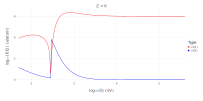
display(plotFormFactors(FFASTMAC, 26))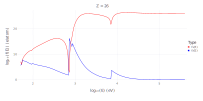
display(plotFormFactors(FFASTMAC, 86))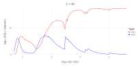
Plot the number and last available edge for each element.
plotEdgeCount(FFASTMAC)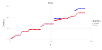
Plot the atomic weight of each element.
plotAtomicWeight(FFASTMAC)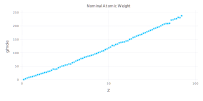
Plot the nominal density (g/cm³) for each element.
plotDensity(FFASTMAC)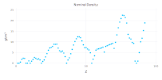
The next three plots show scaling and correction factors.
plotCrossSectionFactor(FFASTMAC)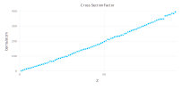
plotRelativisticCorrection(FFASTMAC)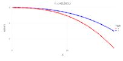
plotNuclearThompsonCorrection(FFASTMAC)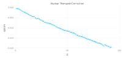
Plot the jump-ratio for the K shell (shell=1)
display(plotJumpRatios(FFASTMAC, 1))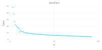